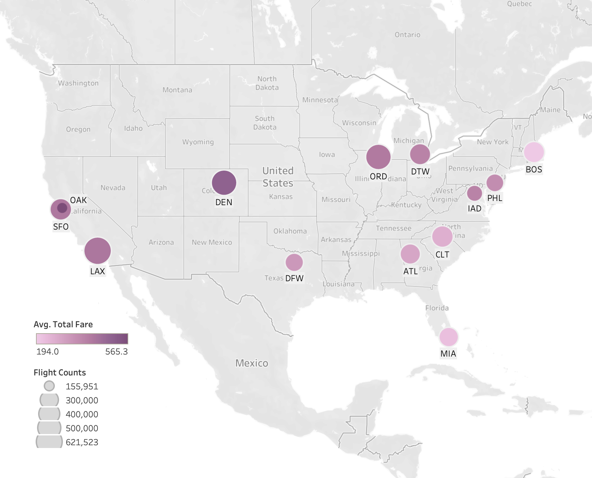

projects

Expedia
Flight Data Analysis
Advanced Analytics of Flight Patterns and Pricing for JFK-Bound Flights
This project utilizes a data comprising detailed flight ticket data captured from Expedia. The analysis presents a multifaceted view of the airline industry's dynamics in relation to JFK-bound flights. It covers geographic and temporal demand, day-of-week pricing patterns, market share, and pricing strategies across different classes.
learn more
SignLens
Capstone Project - Sign Language and Speech Recognition System Using HoloLens 2
In Taiwan, approximately 10.5% of the disabled people are people with hearing impairments, with 44% of those facing difficulties in daily communication due to severity of their conditions.
Our objective was to create a sign language translation system to enhance communication efficiency between the hearing-impaired and the general public.
learn more
IBM
IT Consulting Internship Projects
First Commercial Bank
Digital Transformation Project
First Commercial Bank faced challenges with its outdated corporate internet banking (CIB) system.
The objective was to revamp the CIB system, aiming to enhance its reliability and user experience.
learn more
IBM iX Quality Assurance Automation
Research Project
The project aimed to explore the potential for IBM iX to transition from manual testing towards
automated Quality Assurance (QA) procedures.
learn more
Cathay Financial Holdings
Cloud Technology Internship Projects
Cathay Health Center
Cloud Migration Project
The project's goal was to deliver a thorough analysis aiding the Health Center in determining their optimal
cloud migration approach.
learn more
Brainstorming Platform Project
We aimed to create a digital platform to enhance and streamline the brainstorming sessions through automation. learn moreDecision-Making under HRC
Artificial Intelligence Lab Research Project
Human-robot collaboration (HRC) is an emerging field. Effective decision-making within HRC is influenced by several factors, encompassing both system-related aspects and human-related elements.
The objective of this study is to investigate how variances in individual knowledge levels and the quality of robot recommendations influence humans' decision-making process within the context of HRC.
learn more